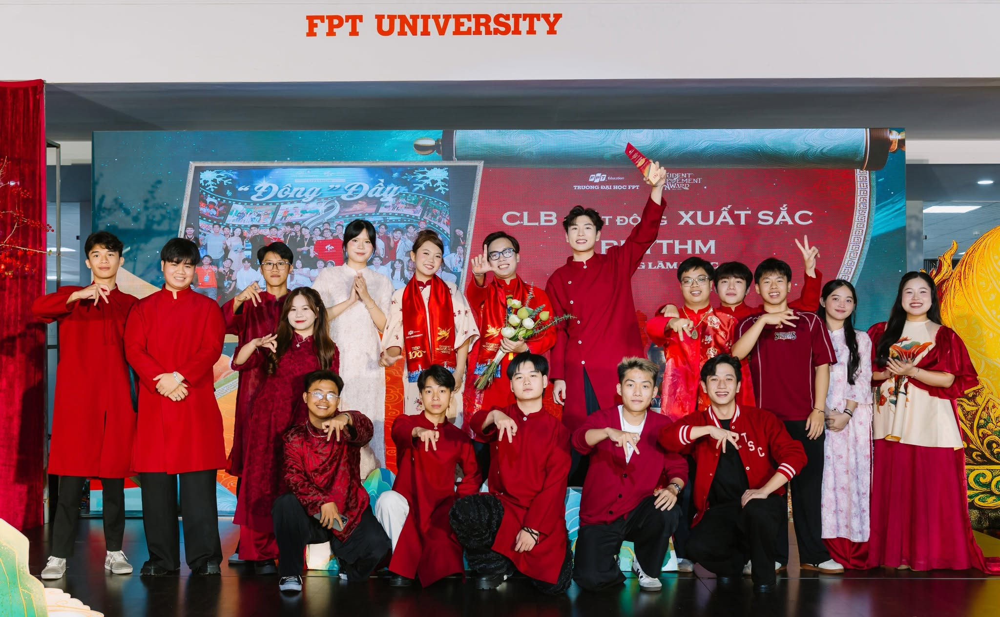
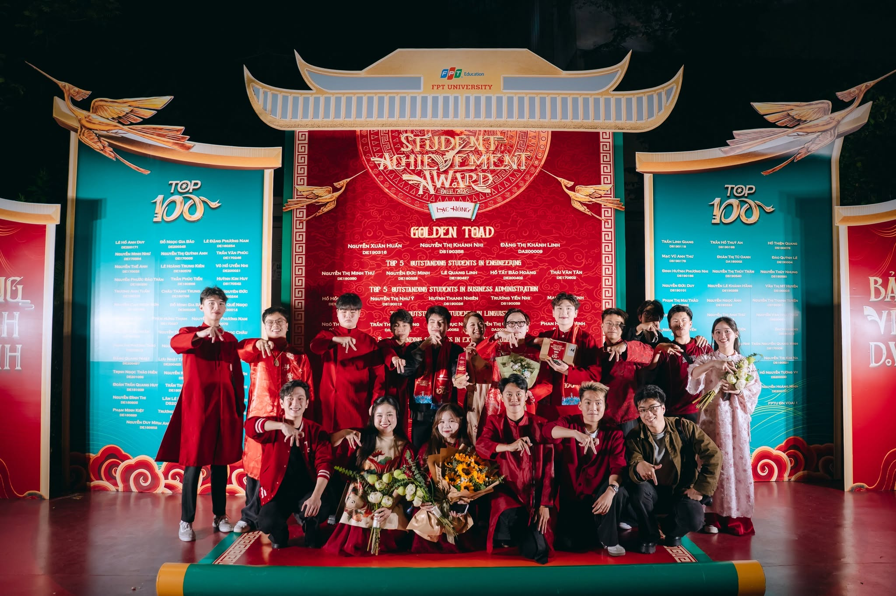
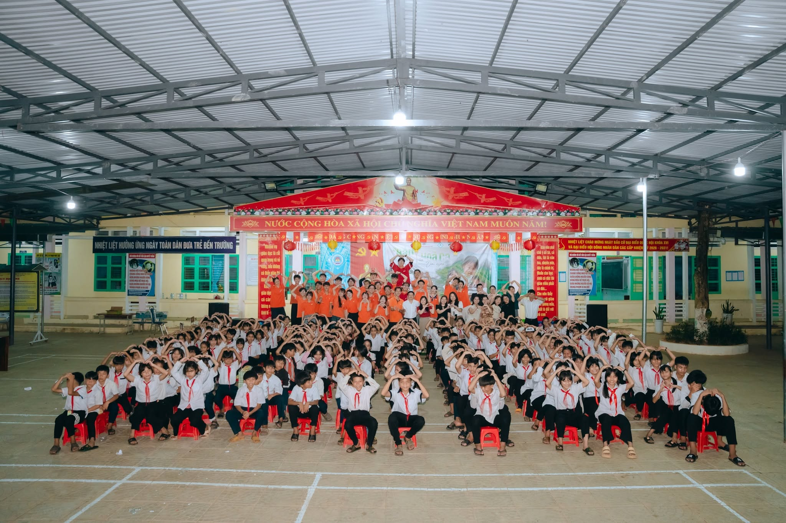

Rhythm - Xưởng làm nhạc.
Information
This is the best music club at FPT University Da Nang. It’s a place where we can grow, learn, and gain valuable life experience—and so much more.
Achievement:
- The Best Club for Consecutive Seasons
- Many members have won numerous impressive awards (Fuda Got Talent, VietNam Indie Club)
- Rhythm have organized many events of various sizes and have received a great deal of positive feedback
Fanpage Rhythm - Xưởng Làm Nhạc.
Steering Committee of Rhythm - Xưởng làm nhạc.
- Event: You will learn how to manage, organize, and execute an event. In addition, you can further develop your creativity by coming up with new ideas.
- Talent: A place where you can shine with your own professional skills (singing, rapping, etc.)
- Media: If you have a special passion for photography and want to let your creativity run wild, join the Media team. Here, you can design, create...
- Producer: If you have a musical mind and dexterous hands, this is where you belong. Guitar, piano, drums... are all ready to welcome you.
- Leadership: As the club’s leaders, they will help us understand how the club operates and provide guidance and direction so that we, as individuals, and our club as a whole can grow even stronger in the future.
Club Photo:



Back to the top !